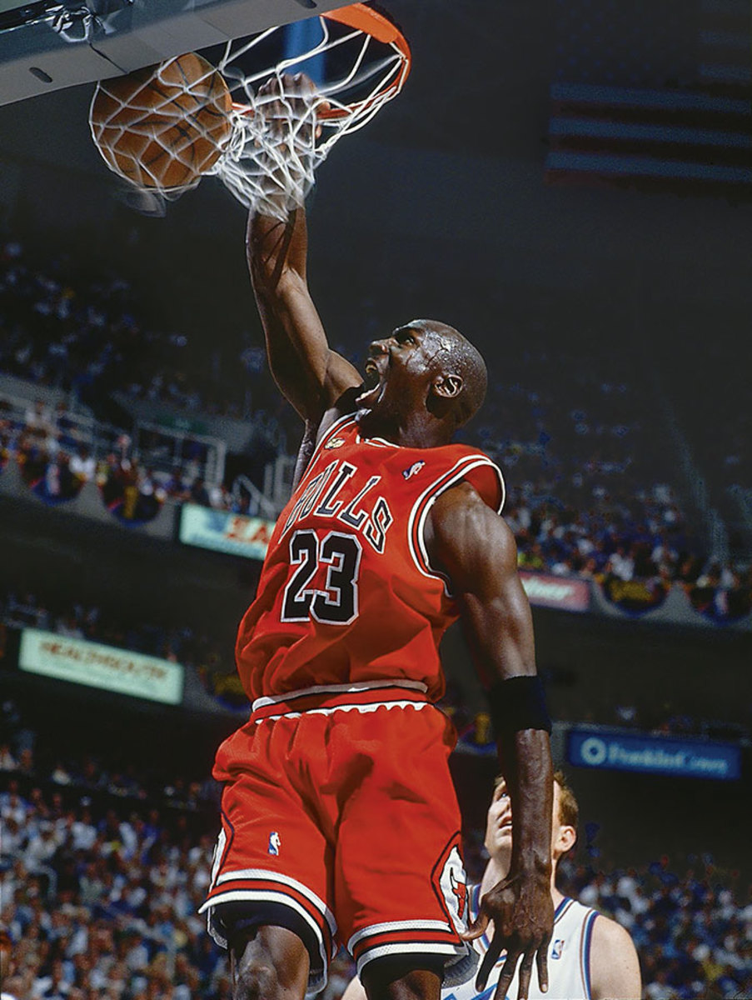
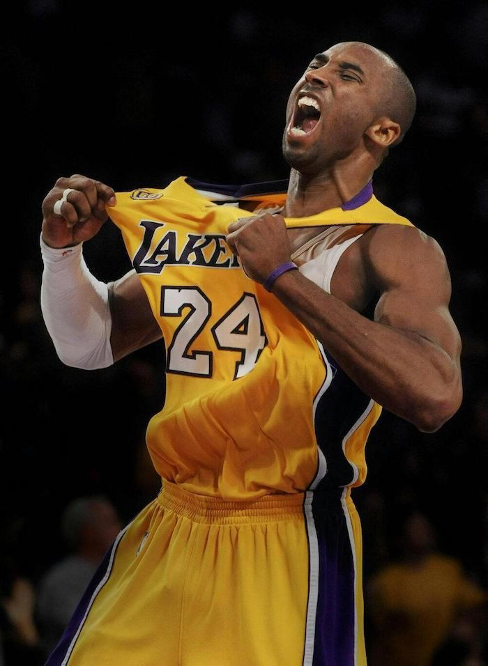
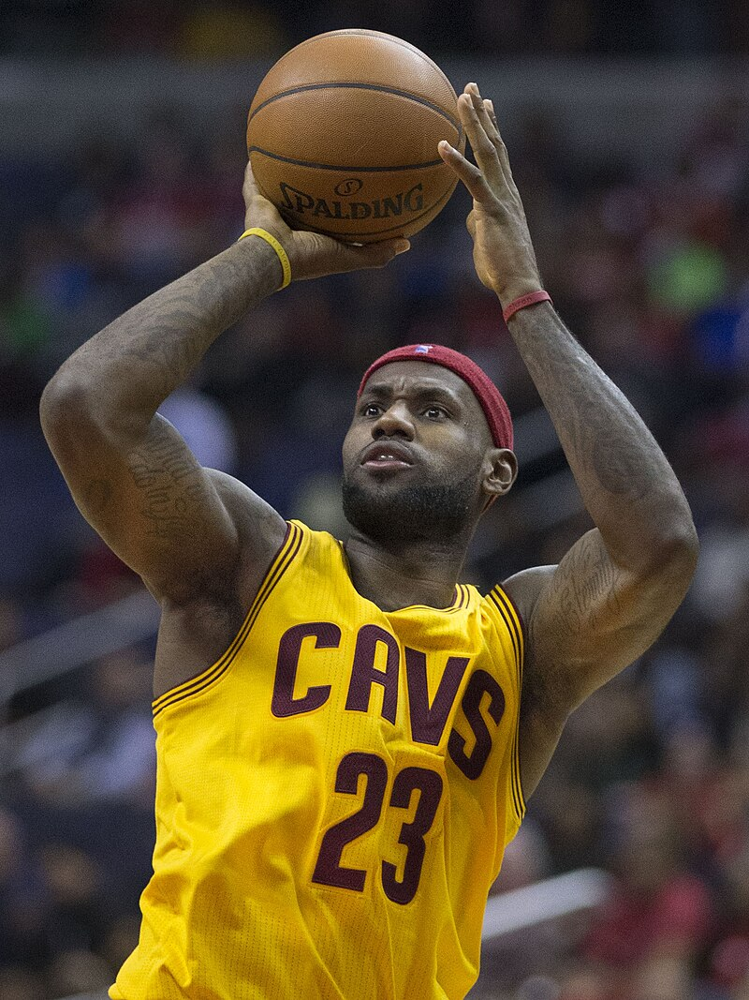

NBA G.O.A.T. Debate
Introduction
We are going to examine 3 of the most influental Basketball players of all time.
Opinions may be different from person to person, based on the era they were playing, based of the impact of every fan of the game of Basketball,
based on the influence that each player made to the fan himself.
So,let's break down some facts and the legacy each Superstar will leave behind!
Michael Jordan
- x6 NBA Champion
- x5 NBA MVP
- x6 NBA Finals MVP
Kobe Bryant
- x5 NBA Champion
- x1 NBA MVP
- x2 NBA Finals MVP
LeBron James
- x4 NBA Champion
- x4 NBA MVP
- x4 NBA Finals MVP
Conclusion
By numbers and trophies the G.O.A.T. Basketball player is Michael Jordan.
By public opinion,well,he is.But for every child growing up and living with his idol,his role model,the player who is copying all his moves,his style of playing,even his lifestyle opinions may differ.
For me, Kobe Bryant was my idol, my role model.Everything he was representing,his passion for the game,his mamba mentallity,his passion to be the best version of himself.
But that's for me,for my age.When MJ was playing, I wasn't even born.So for everyone hits different.You can also check the links I provided from wikipedia.org to learn more
about every legend on the name of Basketball.